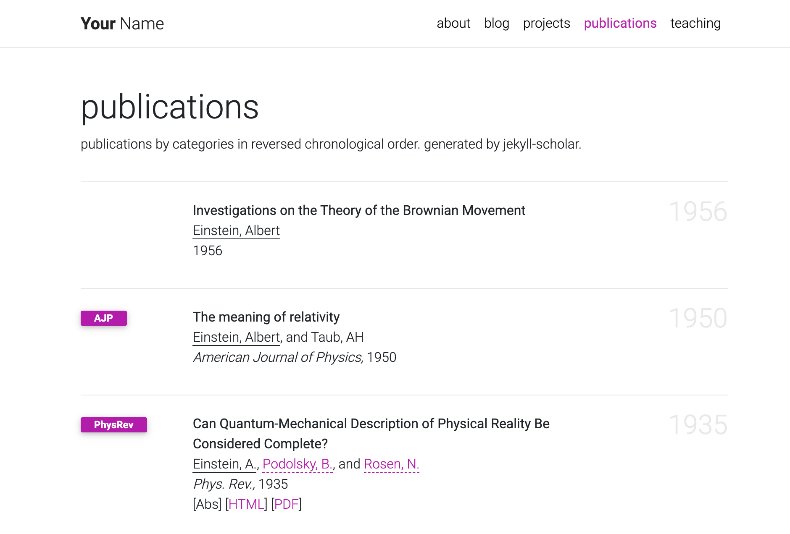

seyeon-lee.github.io
al-folio


A simple, clean, and responsive Jekyll theme for academics. If you like the theme, give it a star!

User community
The vibrant community of al-folio users is growing! Academics around the world use this theme for their homepages, blogs, lab pages, as well as webpages for courses, workshops, conferences, meetups, and more. Check out the community webpages below. Feel free to add your own page(s) by sending a PR.
| Academics | ★ ★ ★ ★ ★ ★ ★ ★ ★ ★ ★ ★ ★ ★ ★ ★ ★ ★ ★ ★ ★ ★ ★ ★ ★ |
| Labs | ★ ★ ★ ★ |
| Courses | CMU PGM (S-19), CMU DeepRL (F-19, S-20, F-20), CMU MMML (F-20) |
| Conferences & workshops | ML Retrospectives (NeurIPS: 2019, 2020; ICML: 2020), HAMLETS (NeurIPS: 2020), ICBINB (NeurIPS: 2020) |
Getting started
For more about how to use Jekyll, check out this tutorial. Why Jekyll? Read this blog post!
Installation
Assuming you have Ruby and Bundler installed on your system (hint: for ease of managing ruby gems, consider using rbenv), first fork the theme from github.com:alshedivat/al-folio to github.com:<your-username>/<your-repo-name> and do the following:
$ git clone git@github.com:<your-username>/<your-repo-name>.git
$ cd <your-repo-name>
$ bundle install
$ bundle exec jekyll serve
Now, feel free to customize the theme however you like (don’t forget to change the name!). After you are done, commit your final changes. Now, you can deploy your website to GitHub Pages by running the deploy script:
$ ./bin/deploy [--user]
By default, the script uses the master branch for the source code and deploys the webpage to gh-pages.
The optional flag --user tells it to deploy to master and use source for the source code instead.
Using master for deployment is a convention for user and organization pages.
Note: when deploying your user or organization page, make sure the _config.yml has url and baseurl fields as follows.
url: # should be empty
baseurl: # should be empty
Upgrading from a previous version
If you installed al-folio as described above, you can upgrade to the latest version as follows:
# Assuming the current directory is <your-repo-name>
$ git remote add upstream https://github.com/alshedivat/al-folio.git
$ git fetch upstream
$ git rebase upstream/v0.3.1
If you have extensively customized a previous version, it might be trickier to upgrade.
You can still follow the steps above, but git rebase may result in merge conflicts that must be resolved.
See git rebase manual and how to resolve conflicts for more information.
If rebasing is too complicated, we recommend to re-install the new version of the theme from scratch and port over your content and changes from the previous version manually.
Features
Publications
Your publications page is generated automatically from your BibTex bibliography.
Simply edit _bibliography/papers.bib.
You can also add new *.bib files and customize the look of your publications however you like by editing _pages/publications.md.
Keep meta-information about your co-authors in _data/coauthors.yml and Jekyll will insert links to their webpages automatically.

Collections
This Jekyll theme implements collections to let you break up your work into categories.
The theme comes with two default collections: news and projects.
Items from the news collection are automatically displayed on the home page.
Items from the projects collection are displayed on a responsive grid on projects page.

You can easily create your own collections, apps, short stories, courses, or whatever your creative work is.
To do this, edit the collections in the _config.yml file, create a corresponding folder, and create a landing page for your collection, similar to _pages/projects.md.
Layouts
al-folio comes with stylish layouts for pages and blog posts.
The iconic style of Distill
The theme allows you to create blog posts in the distill.pub style:
For more details on how to create distill-styled posts using <d-*> tags, please refer to the example.
Full support for math & code
al-folio supports fast math typesetting through KaTeX and code syntax highlighting using GitHub style:
Photos
Photo formatting is made simple using Bootstrap’s grid system. Easily create beautiful grids within your blog posts and project pages:

Other features
Theming
Six beautiful theme colors have been selected to choose from.
The default is purple, but you can quickly change it by editing $theme-color variable in the _sass/variables.scss file.
Other color variables are listed there as well.
Social media previews
al-folio supports preview images on social media.
To enable this functionality you will need to set serve_og_meta to true in your _config.yml.
Once you have done so, all your site’s pages will include Open Graph data in the HTML head element.
You will then need to configure what image to display in your site’s social media previews.
This can be configured on a per-page basis, by setting the og_image page variable.
If for an individual page this variable is not set, then the theme will fall back to a site-wide og_image variable, configurable in your _config.yml.
In both the page-specific and site-wide cases, the og_image variable needs to hold the URL for the image you wish to display in social media previews.
Contributing
Contributions to al-folio are very welcome! Before you get started, please take a look at the guidelines.
If you would like to improve documentation, add your webpage to the list below, or fix a minor inconsistency or bug, please feel free to send a PR directly to master.
For more complex issues/bugs or feature requests, please open an issue using the appropriate template.
FAQ
Here are some frequently asked questions. If you have a different question, please ask on gitter.
-
Q: When I preview my website locally everything looks great, but when I deploy it on GitHub bibliography Liquid tags are not recognized. How do I fix this?
A: GitHub Pages rendering does not support certain Jekyll plugins, andjekyll-scholarthat we use to render bibliography is one of them. Please make sure you deploy your website to GitHub usingbin/deployscript that circumvents the issue. -
Q: When I deploy my fork of al-folio, it says
Deployed successfully!But when I open<my-github-username>.github.io, I getPage not found (404)error. How do I fix this?
A: For personal webpages, please runbin/deploy --user. (See also relevant past issues: #5, #49, #86.)
License
The theme is available as open source under the terms of the MIT License.
Originally, al-folio was based on the *folio theme (published by Lia Bogoev and under the MIT license). Since then, it got a full re-write of the styles and many additional cool features.